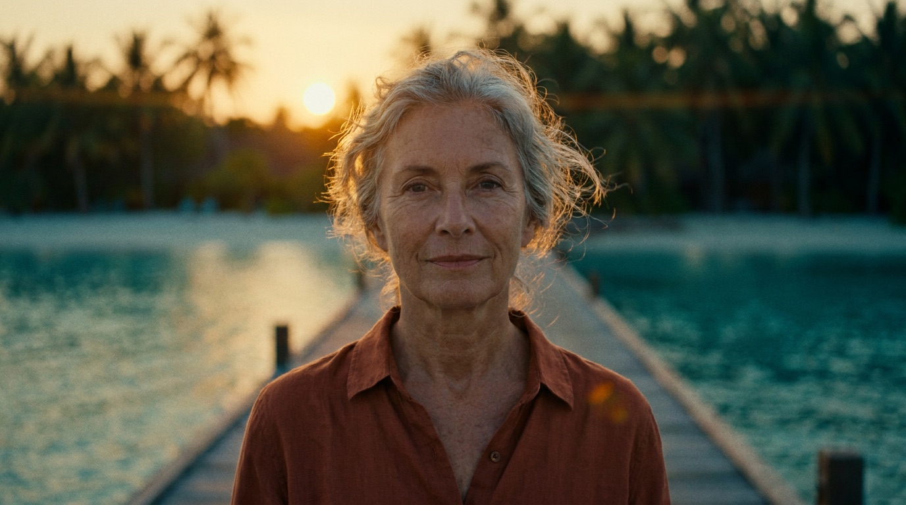

You have planned
for the money.
Now plan for
the person.
Forty years of planning for a date.
About ten minutes planning for a life.
Retirement has a recognised dark side.
These are its four names.
Human-centred retirement planning™
- Direction
- Identity
- Purpose
- Connection

The method
Money funds the lifestyle. It cannot buy the quality of life.
Human-centred planning is the yin to financial planning's yang.
Financial advice answers one question extremely well: can you afford to stop. It is a good question. It is not the only one, and it is not the one that catches people out.
What catches people out is Monday. The calendar with nothing in it. The colleagues who turn out to have been proximity rather than friendship. The introduction that no longer has a job title in it. None of that is a money problem, and no amount of money solves it.
Dr San works on the other half. Psychosocial retirement education is skills work: understanding the recognised risks before you are inside them, deciding what replaces the structure work was quietly providing, and giving the plan enough time to actually take.
It works best three to ten years out. It also works when retirement has already soured and needs a reset.
The practitioner
Dr Sandra Walden-Pearson
A people person, a businessperson, and by her own account a nerd.
Decades of people, strategic and operational leadership across the educational, social and commercial sectors, brought to bear on a single specialism: the human side of retiring well.
Delivered as training, workshops, seminars, one-to-one and group coaching, consulting and speaking — for individuals, and for organisations facing the same question at scale.
PhD Business · MBA specialising in Human Resources · BA Dip Ed · Certified Professional Retirement Coach · Certified Associate Meta Coach · Certified Resilience Coach · High Adversity Resilience Coach · Resilience First Aid Responder · Accredited Mental Health First Aider · Accredited MHFA in the Workplace · Accredited Cinergy Conflict Coach
“Financial planning for retirement is well known. I hadn't heard about psychosocial education focused on human-centred retirement planning — in 30 years of politics. In talking with Dr San I realised the critical need to plan for the human side of retirement. With hand on heart, I can honestly say that engaging Dr San has been life changing.”
For individuals
Get ready and set for when the time is truly right. Or get reset, if it has already started to sour.
Complimentary 30-minute consultFor business
Mastery exits at recruitment, productivity, culture and morale cost. Pipeline sustainability starts earlier than you think.
Brief your leadership teamThere is a version of this that is genuinely good. It takes preparation, and it takes time.
Book the 30 minutes